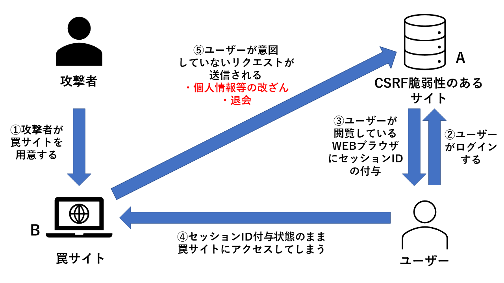

USERNAME: {{ .Name }}
PASSWORD: {{ .Password }}
で登録できました！
登録が成功したことで、Cookieにより以下のセッションIDが付与されました。
{{ .ID }}
本サイトではこのセッションIDを使って、ユーザーの認証を行います。
パスワード変更も可能なので試してみてください。
このセッションID付与が右上の図の③にあたります。
以下のリンクが、①の罠サイトになります。そして、これにアクセスすることが④にあてはまります。
罠サイト
罠サイトにアクセスすると、勝手にパスワードが123456に変えられると思います。これは罠サイトに隠された不正なリクエストが送られたためです。これが図の⑤にあてはまります。
(うまく動作しない場合は、１度クッキーを削除して、はじめからやり直してみてください。クッキーの削除方法はブラウザごとに異なりますので、調べてみてください。)
Cookieのみでセッション管理しているため脆弱性が発生し、罠サイトによるリクエストが成功してしまいます。それにより、ユーザーが意図していないパスワードに変えられてしまいました。
これがCSRFの一例です。